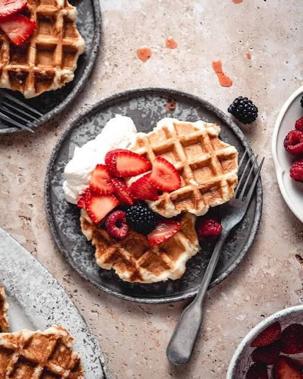

DAY 23 OF 31
🇧🇪 Brussels day trip
Fri 31 Jul 2026


🍴 Must-try today
Liège waffle
📍 What we're visiting (9 stops)
1
1. 🚗 Drive · Amsterdam → Brussels (cousin drives)
📍 Cousin's home · ~210 km via A4/E19 · ~2h drive · no tolls in NL, small tolls in BE
Cousin drives the family · 07:00 depart · easy motorway via Antwerp · arrive Brussels centre ~09:00–09:30 · park at Q-Park Grand Place (€15-20/day) or street parking blue zone · no train tickets to book — much easier with kids + luggage stays in car
2
2. Grand Place + Manneken Pis
📍 Grand Place, 1000 Brussels · Manneken Pis 2 min walk
UNESCO World Heritage gilded square — stunning Gothic Town Hall · Manneken Pis (small but iconic!) · waffle + chocolate shops surrounding the square · free to walk · 45 min
3
3. Belgian Chocolate + Sablon quarter
📍 Place du Grand Sablon, 1000 Brussels · 10 min walk from Grand Place
Neuhaus, Godiva, Pierre Marcolini — the world's best chocolate · buy a box to take home · Sablon antique market on weekends · gorgeous Art Nouveau architecture · kids love the chocolate smells
4
4. Royal Palace of Brussels 👑
📍 Place des Palais 7, 1000 Bruxelles · 10 min walk from Sablon · Metro Trône
🇧🇪 SUMMER-ONLY OPENING (22 Jul–7 Sep) — perfect timing for 1 Aug · FREE entry · official palace of King Philippe · sumptuous Throne Room · Mirror Room with 1.4 million BEETLE WING ceiling · ~1h visit · adjacent Parc de Bruxelles for kids
5
5. MIM — Musée des Instruments de Musique 🎶
📍 Rue Montagne de la Cour 2, 1000 Brussels · 3 min walk from Royal Palace · Metro Gare Centrale
🇧🇪 ART NOUVEAU GEM — housed in the gorgeous 1899 Old England building (iron + glass facade) · 1,500+ musical instruments from all over the world · audioguide automatically plays each instrument's sound as you approach 🎧 (kids LOVE this) · €15/adult · €5 child (6-18) · free under 6 · 1.5h visit · 🍽️ rooftop restaurant with panoramic view
6
6. Atomium ⚛️
📍 Square de l'Atomium 1, 1020 Brussels · Metro 6 to Heysel
Iconic 102m steel structure from 1958 World Expo · 9 stainless-steel spheres connected by tubes · elevator to the TOP sphere for 360° Brussels view · panorama restaurant inside · €16/adult · €8.50 child · 1h visit
7
7. Mini-Europe — all of Europe in miniature 🇪🇺
📍 Bruparck, Avenue du Football 1, 1020 Brussels · next to Atomium
350 miniature monuments at 1:25 scale — Eiffel Tower, Big Ben, Parthenon, Vesuvius eruption, Berlin Wall fall · kids LOVE this · interactive animations + sound · €19.10 adult · €14.50 child (6-11) · €11.10 (under 6) · 1.5h walk-through
8
8. Carbonnade Flamande lunch 🍲
📍 Chez Léon or a Rue des Bouchers brasserie, Brussels
Flemish beef slow-stewed in brown ale — rich, mild, NOT fishy · served with frites · the kid-friendly classic (tender beef + the best fries in Europe) in place of the moules-frites · €18–22pp · sit-down brasserie
9
9. 🚗 Drive · Brussels → Amsterdam (cousin)
📍 Brussels centre · ~210 km return · A12/E19 back via Antwerp
Cousin drives back ~17:00–18:00 · ~2h on motorway · home by ~20:00 for family dinner · kids likely asleep in car · no train station rush — flexible timing
🛏️ Tonight we sleep at
Cousin's home (Amsterdam) 💚 (2nd of 3 nights)
📍 Amsterdam · cousin's address (private)